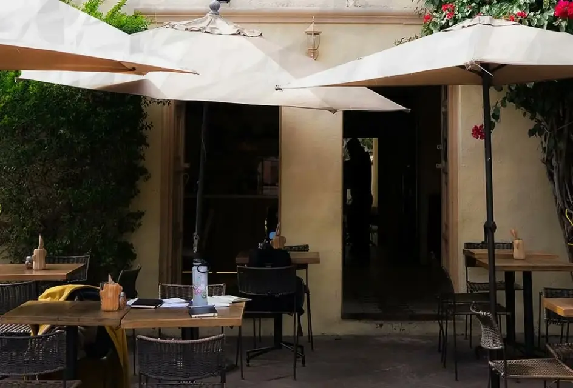
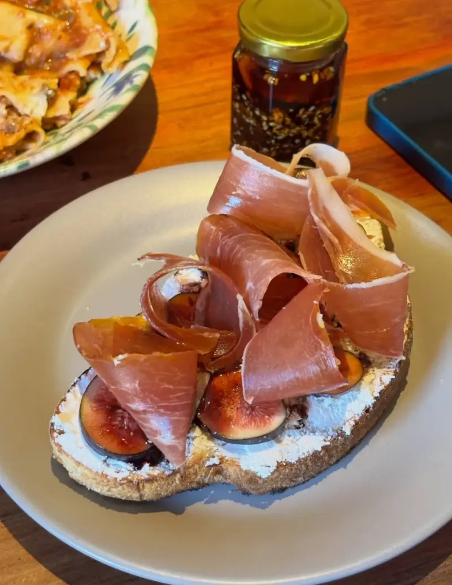
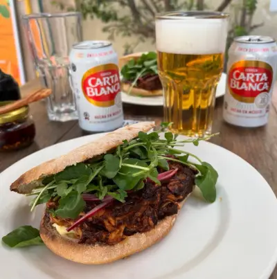
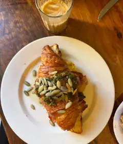
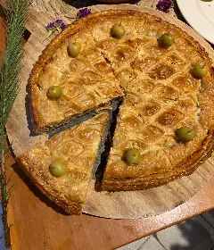
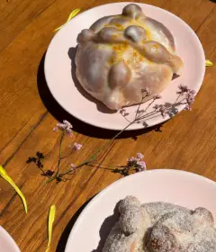
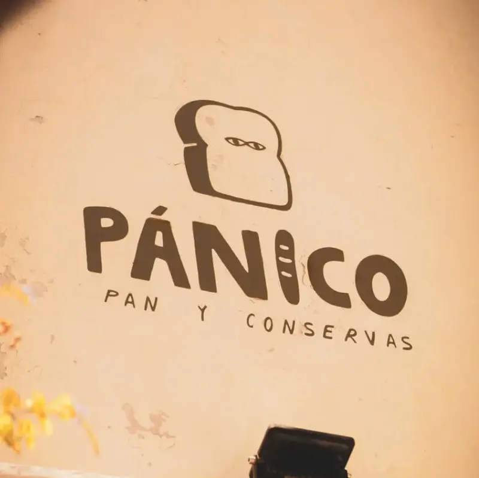
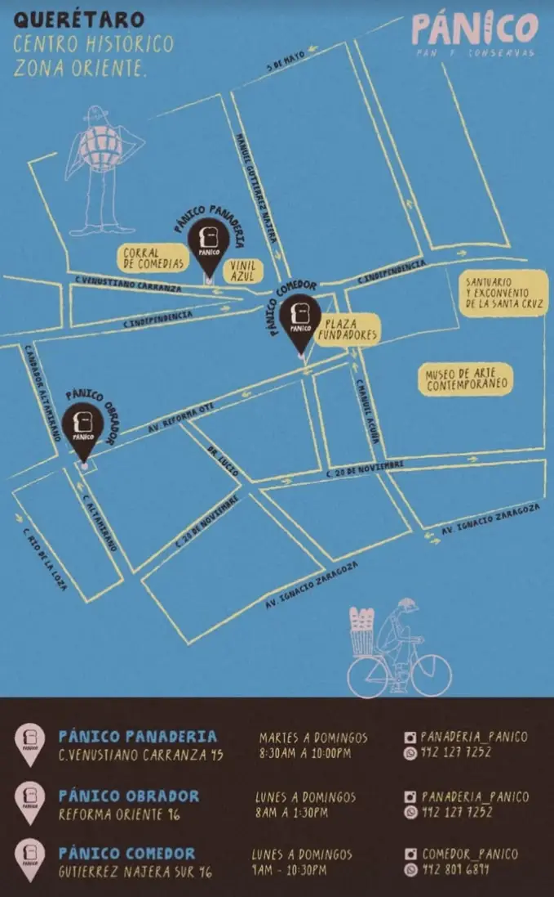

Día de Muertos
Pan de muerto de masa madre
Lo horneamos todos los días durante la temporada. Apártalo por WhatsApp y pasa por él al Comedor.
Apartar pan de muertoSitio de demostración: los precios del menú y las reseñas son de ejemplo.

Frente al Templo de la Cruz
El pan de masa madre de Pánico, hecho desayuno, torta y pizza en una terraza del Centro Histórico.
Abierto todos los días de 9 am a 10:30 pm · desayunos hasta la 1 pm

Pan de masa madre tostado, queso fresco untable, higos y prosciutto.
$185

Carne deshebrada en salsa, berros y cebolla encurtida.
$175

Croissant de la casa con pesto y semillas de calabaza.
$145

Masa enrejada con aceitunas verdes, por rebanada.
$150

De masa madre, solo en temporada.
$65
Pan y conservas
Pánico empezó como panadería de masa madre en el Centro Histórico de Querétaro. Hoy somos tres casas: la Panadería en Venustiano Carranza, el Obrador en Reforma Oriente y este Comedor en Gutiérrez Nájera.
Aquí el pan de la casa se vuelve desayuno, torta y pizza. Servimos todos los días en una terraza con buganvilias, frente al Templo de la Cruz, y tu perro también es bienvenido.

4.5 de 5 en Google Maps
★★★★★
Espacio para una reseña real de Google, idealmente una que hable de los desayunos o de la pizza de masa madre.
Reseña de Google por elegir
★★★★★
Espacio para una segunda reseña real, de preferencia una que mencione la terraza frente al Templo de la Cruz.
Reseña de Google por elegir
★★★★★
Espacio para una tercera reseña real; una que diga que es pet friendly ayuda en la búsqueda local.
Reseña de Google por elegir
Día de Muertos
Lo horneamos todos los días durante la temporada. Apártalo por WhatsApp y pasa por él al Comedor.
Apartar pan de muertoDiciembre
Cada diciembre preparamos un menú especial de temporada. Pregunta por fechas y disponibilidad.
Preguntar por WhatsAppManuel Gutiérrez Nájera Sur 46
Centro Histórico, 76000 Santiago de Querétaro, Qro.
Frente al Templo de la Cruz, a una cuadra de Plaza Fundadores.
